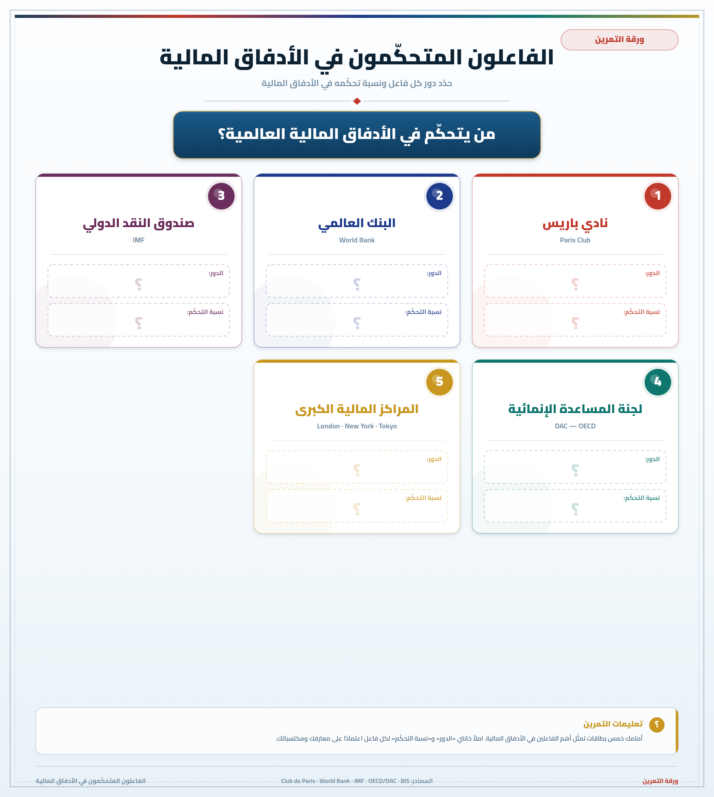
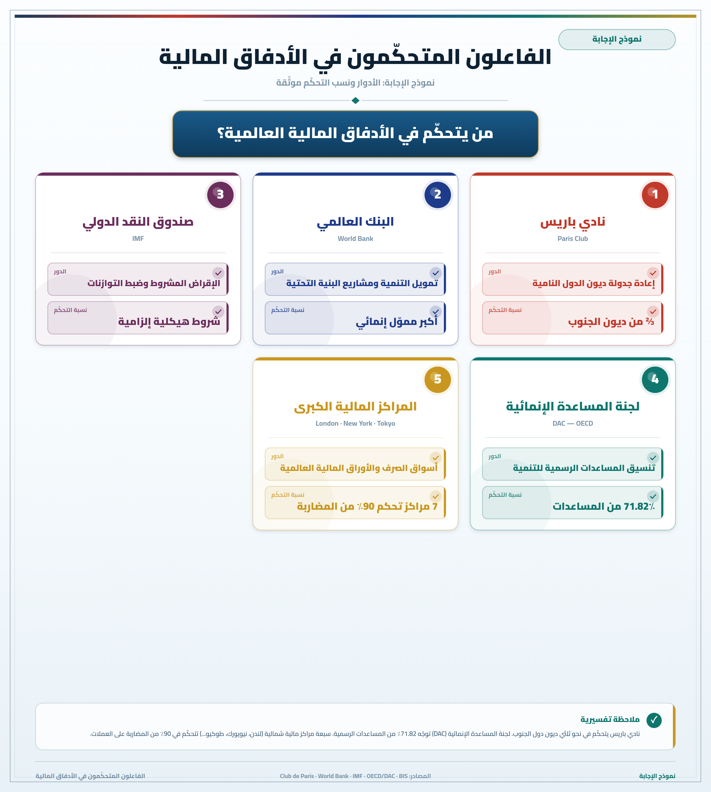

تمارين – الأطراف المتحكمة في الأدفاق المالية
- نادي باريس:
- مجموعة من 19 بلداً متقدماً دائناً أنشئت سنة 1956، تمتلك ثلثي ديون دول الجنوب وتتدخل لإعادة جدولة الديون التي تعجز بعض البلدان النامية عن تسديدها.
- لجنة المساعدة من أجل التنمية:
- لجنة ممولة من طرف الدول المتقدمة والثرية، تهيمن على معظم المساعدات الموجهة إلى دول الجنوب (حوالي 71.82% سنة 2022).
- برنامج الإصلاح الهيكلي:
- برامج تقشف اقتصادي يفرضها صندوق النقد الدولي والبنك العالمي على البلدان المدينة مقابل تقديم القروض، وتشمل تحرير الأسواق وتقليص الإنفاق الاجتماعي.
- صندوق أوبك للتنمية:
- صندوق تنموي أنشأته الدول المصدرة للنفط لتقديم قروض ميسرة للدول النامية.
| المنطقة | الحصة (%) |
|---|---|
| آسيا النامية | 51.1 |
| بلدان الشمال (أوروبا وأمريكا الشمالية) | 29.2 |
| أمريكا اللاتينية | 16.2 |
| أفريقيا | 3.5 |
المصدر: تقرير الاستثمار العالمي – الأونكتاد 2023


تهيمن بلدان الشمال على الأدفاق المالية العالمية عبر عدة مؤسسات: نادي باريس الذي يمتلك ثلثي ديون دول الجنوب، والبنك العالمي وصندوق النقد الدولي اللذان يفرضان شروطاً قاسية كبرامج الإصلاح الهيكلي، ولجنة المساعدة من أجل التنمية التي تهيمن على أكثر من 71% من المساعدات. كما تتحكم 7 ساحات مالية شمالية (لندن، نيويورك، طوكيو) في 90% من المضاربات بأسعار صرف العملات في العالم.
- مقدمة: المؤسسات المالية الدولية وموقعها المهيمن.
- تطوير: أولاً. صندوق النقد الدولي والبنك العالمي وفرض برامج الإصلاح الهيكلي؛ ثانياً. نادي باريس والتحكم في ديون دول الجنوب؛ ثالثاً. النتائج: تفاقم المديونية وتكريس التبعية.
- خاتمة: ضرورة إصلاح النظام المالي العالمي.
مقدمة
تشكل المؤسسات المالية الدولية أداة رئيسية لهيمنة بلدان الشمال على الأدفاق المالية العالمية وتكريس تبعية دول الجنوب.
تطوير
أولاً. صندوق النقد الدولي والبنك العالمي
يفرض هذان المؤسستان شروطاً قاسية على البلدان المدينة تشمل برامج التقشف الهيكلي وتحرير الأسواق وتقليص الإنفاق الاجتماعي مقابل تقديم القروض، مما يحد من قدرة دول الجنوب على تحقيق تنميتها المستقلة.
ثانياً. نادي باريس والتحكم في المديونية
يمتلك نادي باريس ثلثي ديون دول الجنوب، ويتحكم في إعادة جدولة الديون، مما يُبقي هذه الدول رهينة دوامة المديونية.
ثالثاً. تكريس التبعية
ينتج عن ذلك تزايد مديونية دول الجنوب (أكثر من 11 تريليون دولار سنة 2022)، وتعميق الفوارق بين الشمال والجنوب.
خاتمة
هكذا تساهم المؤسسات المالية الدولية في تكريس التبعية الاقتصادية لدول الجنوب، مما يستوجب إصلاح النظام المالي العالمي لصالح التنمية العادلة.
الخط الزمني: 1944: بريتون وودز ...